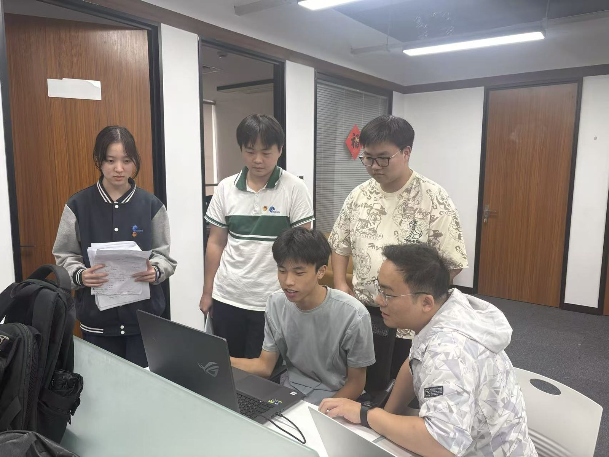
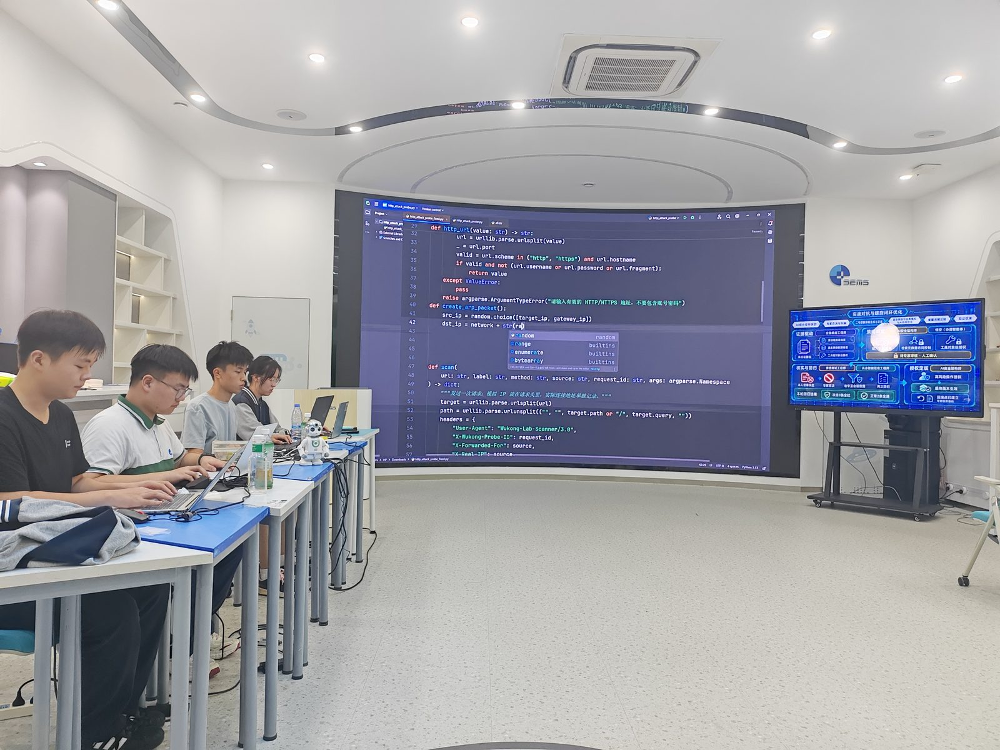
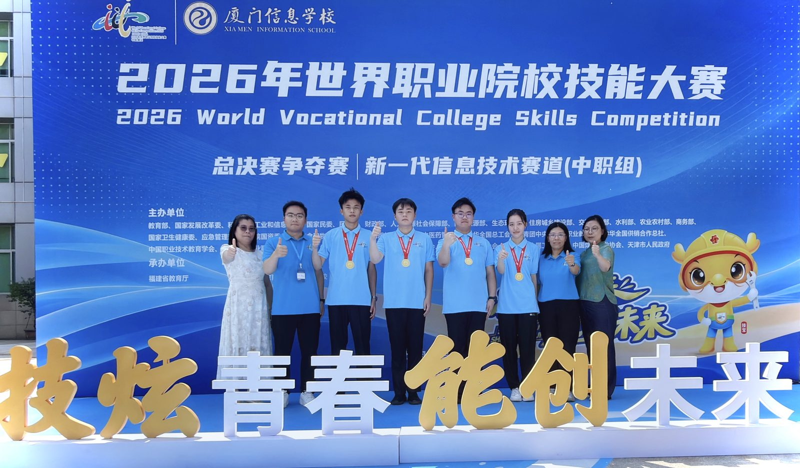
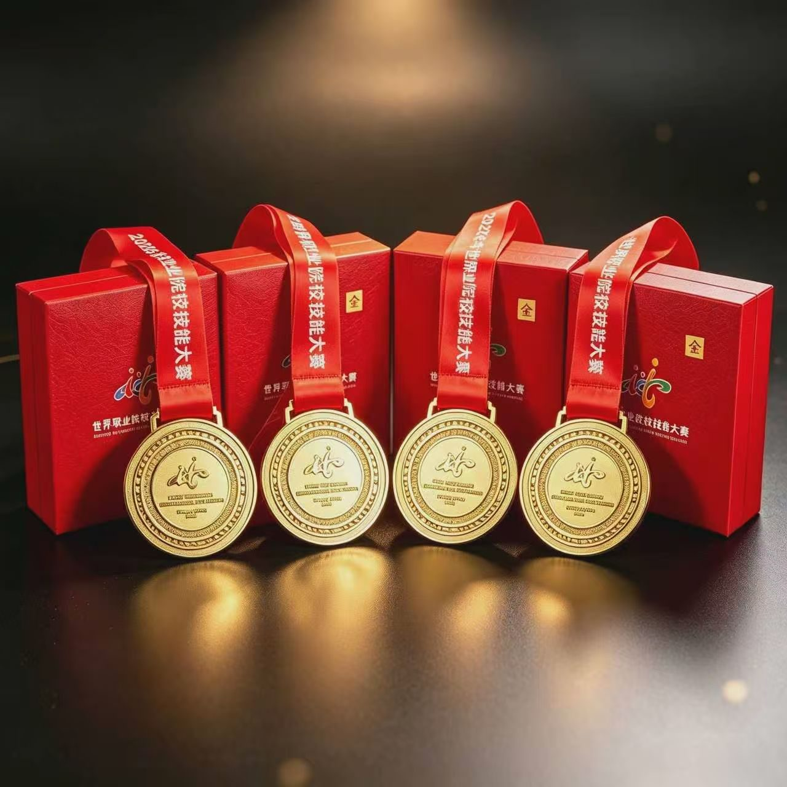

引 言
9月23日，厦门信息学校2026年世界职业院校技能大赛总决赛争夺赛新一代信息技术赛道（中职组）比赛现场，来自全国154支队伍的选手们同台竞技。由学校魏楚禾、金家科、陈俊帆、张芾源四位同学组成的参赛团队，在指导教师孔庆苹、叶胤翔的带领下，凭借自主研发创新项目和扎实的专业素养，成功斩获金奖。
赛前
日夜磨一剑
备赛攻坚 · 假期与周末扎根实训室


-
团队组建 · 明确岗位职责
四名队员根据赛项要求明确岗位职责，各司其职、分工协作，相互补位、彼此支撑。
- 魏楚禾25001班 · 班主任 黄士彬
- 金家科24005班 · 班主任 钱维娜
- 陈俊帆25006班 · 班主任 黄铮
- 张芾源24003班 · 班主任 朱虎声
指导教师孔庆苹、叶胤翔
-
时间与场地 · 扎根实训室
为打磨最佳参赛状态，队员们主动利用假期和周末时间扎根实训室，反复打磨参赛方案、优化展示逻辑、磨合团队流程。
-
应对困难 · 在瓶颈中突破
训练过程充满挑战，时常遇到各类难题与瓶颈。团队没有轻言放弃，而是相互交流、共同研讨，在反复试错与坚持中不断突破自我。
-
教师指导 · 全程陪伴集训
指导教师孔庆苹、叶胤翔全程陪伴集训，从项目方案梳理到技术难点突破，耐心指导、精准点拨，在高压备赛中锤炼同学们的专业心态与职业素养。
-
赛项要求 · 对标真实行业场景
赛项立足数字产业前沿，综合考察选手的专业技能、创新思维、职业素养与团队协作能力，对标真实行业工作场景；内容繁杂、训练强度大，对综合实战能力、抗压能力和临场应变能力提出极高标准，竞争激烈、奖项分量重。
赛中
鹭岛摘金奖
9月23日 · 厦门信息学校 · 全国 154 支队伍同台竞技
-
时间地点 · 厦门赛场
，比赛在厦门信息学校举行，赛项为 2026 年世界职业院校技能大赛总决赛争夺赛新一代信息技术赛道（中职组）。
-
赛场规模 · 强劲对手
来自全国154 支队伍的选手同台竞技，对手强劲、赛程紧张。
-
现场表现 · 沉着应战
四名队员沉着冷静、从容应战，全程保持稳定心态，配合默契、流程流畅，完整展现了项目的创新亮点与团队专业风貌。
以良好的精神状态和扎实的综合能力，顺利完成全部赛项展示。
-
比赛结果 · 脱颖而出
从 154 支队伍中脱颖而出，成功摘金。

赛后
能创未来
收获与成长 · 从技能比拼到职业素养的沉淀

-
专业能力 · 夯实基础
同学们表示，漫长的集训时光，不仅夯实了自身的专业基础，更拓宽了前沿技术视野。
-
方法与素养 · 三大能力
在一次次攻坚克难中培养了独立思考、问题研判、高效复盘的专业能力。
-
成长意义 · 不只是技能比拼
这场赛事不仅是一次技能比拼，更是一场自我磨砺、自我突破的成长修行，为今后专业学习和技能深耕积累了宝贵经验。
留 言 区
还没有留言，来说第一句吧